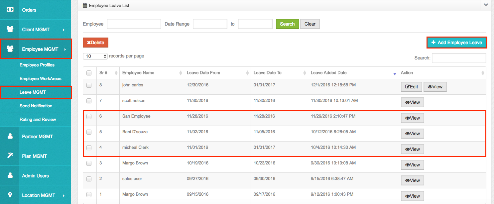

Leave Management
• Admin can manage employee leave using this section.
• Admin will be able to add new leaves, edit future leaves or delete future leaves for the employee.
• Admin can see list of employees for whom leave is added.
• The leave dates which are already passed will have ‘View’ button instead of ‘Edit’ in the list. And details will be displayed in viewable format.

• To add a leave of an employee follows below steps:
1) Click on ‘Add Employee Leave’ button.
2) Admin will be asked leave details displayed in the below image.
3) Search an employee for which admin wants to add a leave.
4) Select that particular employee.
5) Enter Leave Start Date and Leave End Date.
6) Enter Reason for the leave.
7) Click on ‘Add leave; button.
• Once a leave is added then, from start leave date to end leave date no new service will be assigned to that employee.
• If the admin wants to add an emergency / sick leave for an employee then follow below steps:
1) Go to ‘Services’ section and then in ‘Scheduled’ Section.
2) Search an employee for whom admin wants to add emergency or sick leave.
3) If any schedules found for that employee then edit all those schedules and reassign that schedules to another employee.
• While adding leave for any employee, Admin will be asked for “Available on holiday for emergency services” means if Admin selects Yes for this, then that employee will be assigned on the leave date only for emergency services though he is on the leave for that date.
• But if Admin selects “No”, then that employee will not be assigned on the leave date for any of the services.
• If AirCall services want to give leave for any public holidays / for any festival / blackout days then Admin has to add leave for all the employees from this section.
• After adding leave for all employees, those employees will not be assigned for any schedule on those leave dates.

Created with the Personal Edition of HelpNDoc: Free HTML Help documentation generator